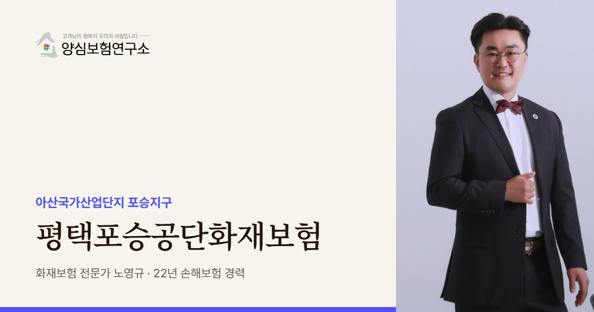

포승공단은 제조 공장 옆에 항만 저장시설이 있는 독특한 산단입니다. 노영규 대표가 우리 공장뿐 아니라 이웃 시설의 위험까지 넓게 보고 보장을 설계합니다.
평택포승공단 안내
평택포승공단화재보험은 평택시 포승읍의 아산국가산업단지 포승지구에 입주한 공장이 화재와 폭발로 입는 재산 손해와 이웃에 대한 배상책임을 대비하는 보험을 가리킵니다. 흔히 포승공단으로 부르지만 법정 명칭은 1979년 지정된 아산국가산업단지의 한 지구로, 화성 우정, 평택 원정, 당진 고대·부곡 지구와 함께 묶여 있습니다.
평택시사가 적은 입주 업종은 음식료, 목재종이, 석유화학, 비금속, 철강, 기계, 전기전자, 운송장비로 폭이 넓습니다. 한 단지 안에 불에 잘 타는 종이·목재 업종과 폭발 위험이 있는 석유화학 업종이 함께 있다는 뜻이어서, 우리 공장의 위험만큼이나 이웃이 무엇을 다루는지가 중요해집니다.
포승공단은 평택항에 바로 붙어 있고 국도 38호선, 서해안고속도로 서평택IC와 가깝습니다. 2004년 인천일보는 석유·화학 저장탱크 터미널이 항만 인접 단지 중심부에 자리해 대형사고가 우려된다고 지적했습니다. 수입 원자재와 수출 완제품이 한꺼번에 오가는 구조라 재고가 몰리는 시기와 저장시설과의 거리를 함께 따져야 합니다.
2025년 11월에는 포승읍 내기리의 폐업 공장(연면적 4,091㎡)에서 불이 나 대응 1단계 속에 약 3시간 만에 진화됐습니다. 가동을 멈춘 빈 공장은 관리가 느슨해 화재가 나기 쉽고, 불이 나면 바로 옆 가동 공장의 문제가 됩니다. 인접한 경기경제자유구역 포승(BIX)지구가 모빌리티 클러스터로 개발되고 있어 주변 공사도 이어지고 있습니다.
포승공단 공장을 상담할 때는 공장에 보관하는 원자재가 수입품인지도 확인합니다. 수입 원자재는 다시 들여오는 데 시간이 걸려, 화재로 재고를 잃으면 재가동까지 기다리는 기간이 길어질 수 있습니다. 이 기간은 휴업손해 보상 기간을 정할 때 함께 반영해야 합니다.
2025.11 포승읍 내기리 폐업 공장(연면적 4,091㎡)에서 불이 나 약 3시간 만에 진화됐습니다(대응 1단계, 인명피해 없음). (YTN, 뉴스핌)
주요 위험
인접한 저장시설 사고는 폭발과 대형 화재로 번질 수 있어 폭발 손해 보장을 확인합니다.
입항 일정에 따라 재고가 몰리는 시기를 기준으로 가입금액을 맞춥니다.
불에 잘 타는 업종이 이웃이면 연소 확대를 전제로 배상 한도를 잡습니다.
폐업·휴업 공장은 관리 공백이 생기기 쉬워 이웃 공장의 위험이 됩니다.
항만 지역의 강한 바람은 불씨를 멀리 옮길 수 있습니다.
모빌리티 관련 공정은 배터리와 도장 설비의 화재 위험을 따로 봅니다.
※ 실제 보장 여부와 한도, 면책 사항은 가입하는 상품의 약관과 공장 현황에 따라 달라집니다.
방문 상담
포승공단 공장은 항만과 저장시설, 이웃 공장의 위치에 따라 위험이 달라집니다. 방문해서 공장 배치와 주변 시설을 함께 둘러보고 보장을 정리합니다.
꼭 확인할 점검 항목
고객 후기


※ 실제 계약고객과 나눈 카카오톡 상담과 후기 일부이며, 개인정보는 가렸습니다.
지역 상담 Q&A
포승공단은 아산국가산업단지의 포승지구입니다. 보험 서류에는 공장 주소와 정식 산단 명칭을 정확히 적는 것이 좋습니다.
평균이 아니라 재고가 가장 많이 쌓이는 입항 직후를 기준으로 잡는 것이 안전합니다. 변동이 크다면 재고 금액을 정기적으로 신고하는 방식을 검토할 수 있습니다.
우리 공장 화재보험에 폭발 손해가 포함돼 있다면 먼저 보상받고 보험사가 원인 제공자에게 구상할 수 있습니다. 가입 전에 폭발 보장 여부를 반드시 확인하세요.
공장 밖 항만 창고에 있는 제품은 공장 화재보험의 소재지 밖일 수 있습니다. 운송·보관 중인 재산을 보는 보험으로 따로 대비할 수 있는지 확인해야 합니다.
공장 배치와 주변 시설, 재고 흐름을 함께 보고 폭발·배상·재고 보장을 정리해 드립니다.
 MGF 베스트스토리텔러
MGF 베스트스토리텔러 단행본 출간
단행본 출간 월간 칼럼 연재
월간 칼럼 연재 고객 소개 후기
고객 소개 후기 지인 소개 후기
지인 소개 후기